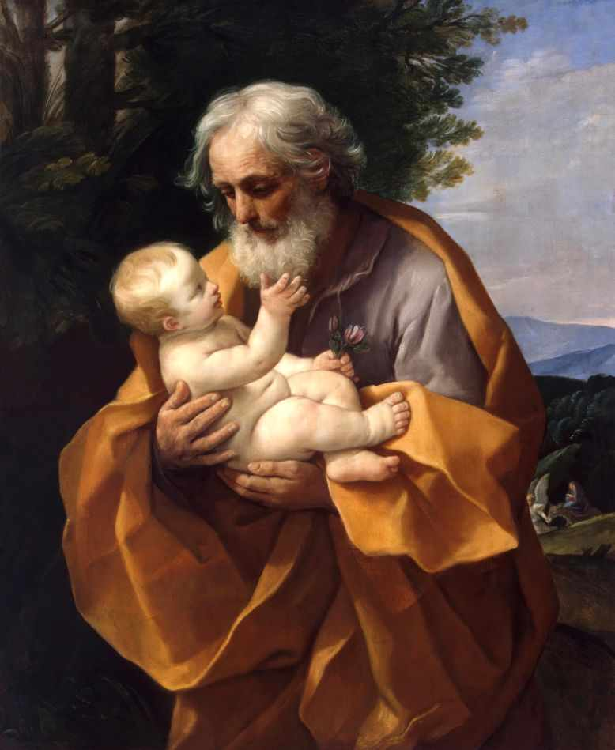

Mergulhe na vida e nas virtudes do glorioso Patrono da Igreja Universal, o homem justo que aceitou a vontade de Deus no silêncio.
Começar Estudo
Um simples carpinteiro ou o guardião da Sagrada Família? Muitas vezes relegado a um papel secundário na imaginação popular, São José é, na verdade, uma das figuras mais grandiosas da história da salvação.
Descubra a teologia josefina (Josefologia). Estudaremos a linhagem de Davi, a importância do seu matrimônio verdadeiro com a Virgem Maria, seu papel como educador do Menino Jesus e por que a Igreja recorre ao seu patrocínio poderoso contra os males do nosso tempo.
O contexto histórico, a genealogia e a justiça de São José perante a lei.
A pureza do casamento com Maria e a aceitação do mistério da Encarnação.
A fuga para o Egito, a vida oculta em Nazaré e o modelo de paternidade.
O papel de São José como Padroeiro da Boa Morte e protetor da Igreja Universal.